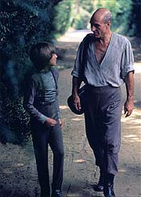
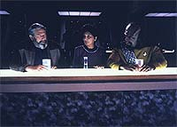
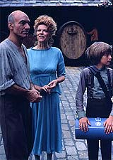
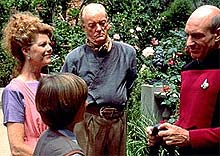

|
MANCHETE
DO EPISÓDIO
História
"mamão com açúcar" mostra
as dificuldades da volta para casa
Episódio
anterior | Próximo
episódio
Sinopse:
Data Estelar: 44012.3.
 Logo após o
incidente com os Borgs, a Enterprise encontra-se em uma doca
espacial na órbita da Terra para reparos. Enquanto isso, a tripulação
aproveita para rever os parentes que vivem na Terra. Picard, ainda
recuperando-se de sua assimilação pelos Borgs, volta à sua
cidade-natal após 20 anos.
Lá ele reencontra seu irmão Robert, que não o perdoa por ter
deixado a tradição de sua família para entrar na Academia da
Frota, e seu sobrinho, René, que Jean-Luc não conhecia.
Enquanto isso, a bordo da Enterprise, Worf recebe a inesperada
visita de seus pais adotivos, Sergey e Helena Rozhenko.
Comentários:
"Family" é um episódio atípico. Nada de
aventuras espaciais, vilões ameaçadores ou catástrofes iminentes,
mas um roteiro "mamão com açúcar", contrastando com
toda a ação de "The Best of Both
Worlds, Part II". É justamente essa característica
que faz ele audaciosamente ir onde nenhum episódio jamais esteve,
mostrando o que significa reencontrar a família após longo tempo
isolado em missões a planetas distantes.
 O episódio
prova que não é preciso uma grande ameaça para que uma história
seja interessante. Não há absolutamente nada que ameace qualquer
membro da Enterprise ou qualquer habitante da Terra. Tudo é paz e
sossego, mas o conflito entre os personagens é suficiente para
fazer com que esses 45 minutos passem em um piscar de olhos.
Para Picard, trata-se de um momento especial. Ele volta a encontrar
seu irmão, Robert, após 20 anos sem contato. E a primeira impressão
é a de que é mais fácil lidar com os Borgs do que com esse
explosivo reencontro.
O roteiro é extremamente eficiente, retratando com grande realismo
a relação entre os dois. É nesses momentos que se vê nitidamente
o maior diferencial de A Nova Geração com relação à Série
Clássica: os personagens, por mais heróicos que sejam, são tão
humanos e sólidos quanto eu e você.
 Delicioso também
é conhecer os pais adotivos de Worf. A química dos dois é
perfeita para contrabalançar a seriedade do Klingon.
A única passagem verdadeiramente esquecível é a em que Wesley
ouve a mensagem deixada há anos por seu pai, Jack Crusher. Está na
cara que a cena foi escrita só para colocar Wes na lista da
"agência de reencontros de parentes perdidos Ron Moore".
Além de ser incrivelmente conveniente o fato de Jack ter deixado
uma mensagem para Wesley, a desculpa que ele dá para fazê-lo é
esfarrapada até dizer chega. Para completar, ele não diz nada que
valha a pena.
 Mas o
dueto Jean-Luc/Robert é perfeito, compensando por tudo o que pode
ter faltado. Não há um par de irmãos que não consiga se
identificar, ao menos em parte, com aquela dupla. E a conclusão
--com um carinhoso abraço dos dois-- mostra que, apesar das diferenças,
os dois se amam tão profundamente que nem é preciso que um diga
isso ao outro. Coisas de família...
Citações:
Picard - "They
took everything I was! They used me to kill... and to destroy... and
I couldn't stop them! I tried so hard!"
("Eles tiraram tudo que eu era! Eles me usaram para matar... e
destruir... e eu não pude impedi-los! Eu tentei tanto!")
Trivia:
 No filme para cinema "Jornada nas Estrelas - Generations",
Picard recebe a notícia que seu irmão e sobrinho morreram em um
incêndio.
No filme para cinema "Jornada nas Estrelas - Generations",
Picard recebe a notícia que seu irmão e sobrinho morreram em um
incêndio.
No
mesmo filme, René Picard aparece enquanto Picard está no "Nexus".
O ator que interpretou René não foi o mesmo deste episódio. O
ator que fez René em Generations foi Christopher James
Miller.
Este
foi o primeiro episódio na história das séries de Jornada
que não teve uma cena sequer na ponte de comando.
Doug
Wert aparece neste episódio como o pai falecido de Wesley Crusher,
Jack, em uma cena no Holodeck. Ele voltaria a fazer este papel no
episódio do 5º ano "Violations",
onde aparece em um sonho.
Após
duas temporadas, enfim o nome completo de O'Brien foi revelado:
Miles Edward O'Brien.
Neste
episódio, Robert Picard dá de presente ao irmão Jean-Luc uma
garrafa de vinho, que depois será vista nos episódios "Legacy"
e "First Contact", ainda
desta temporada.
Embora
tivesse sido exibido uma semana após o épico "The
Best of Both Worlds, Part II", e servisse como um epílogo
para o mesmo, este episódio, apesar de muito bom, teve a menor audiência
da 4ª temporada da Nova Geração nos EUA.
Ficha
técnica:
Escrito por Ronald D. Moore
Direção de Les Landau
Exibido em 1/10/1990
Produção: 078
Elenco:
Patrick Stewart como
Jean-Luc Picard
Jonathan Frakes como William Thomas Riker
Brent Spiner como Data
LeVar Burton como Geordi La Forge
Michael Dorn como Worf
Gates McFadden como Beverly Crusher
Marina Sirtis como Deanna Troi
Wil Wheaton como Wesley Crusher
Elenco convidado:
Colm Meaney
como O'Brien
David Tristan Birkin como René Picard
Samantha Eggar como Marie Picard
Jeremy Kemp como Robert Picard
Theodore Bikel como Sergey Rozhenko
Georgia Brown como Helena Rozhenko
Dennis Creaghan como Louis
Doug Wert como Jack R. Crusher
Episódio
anterior | Próximo
episódio
|